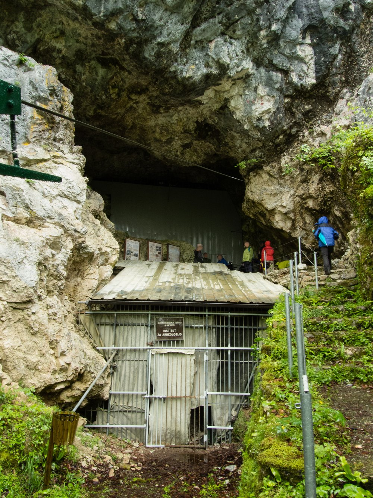
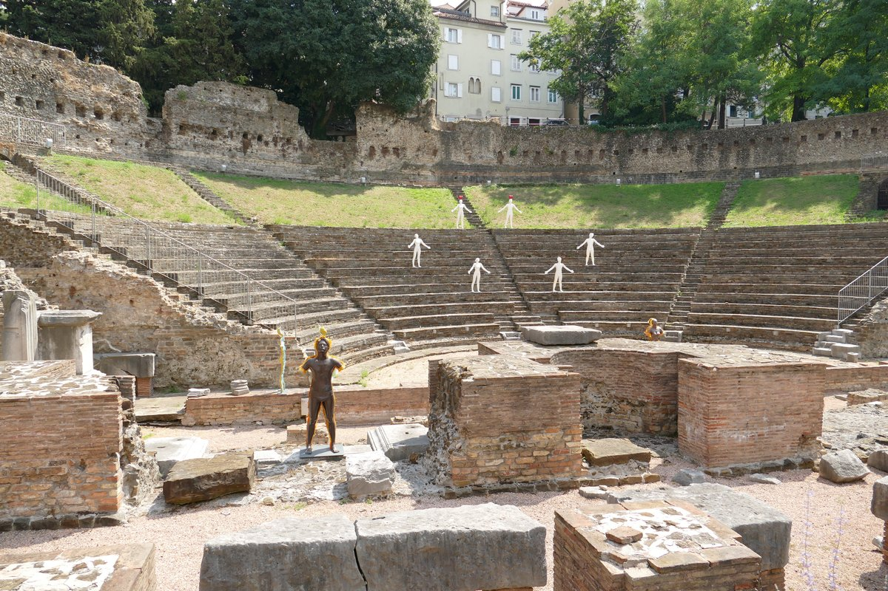
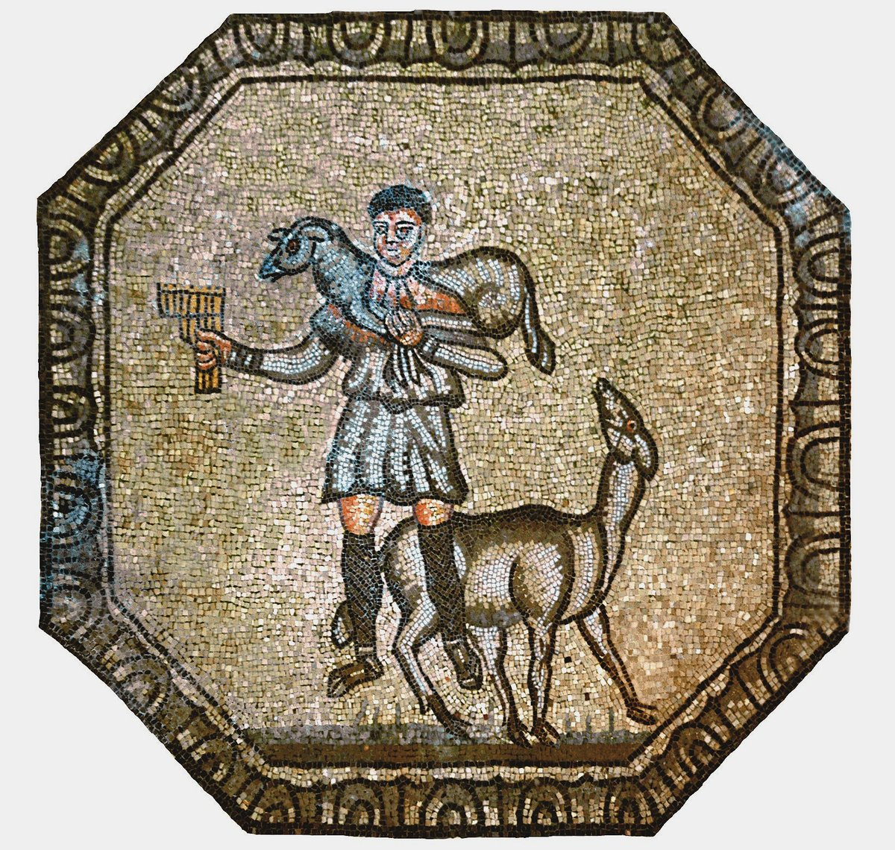
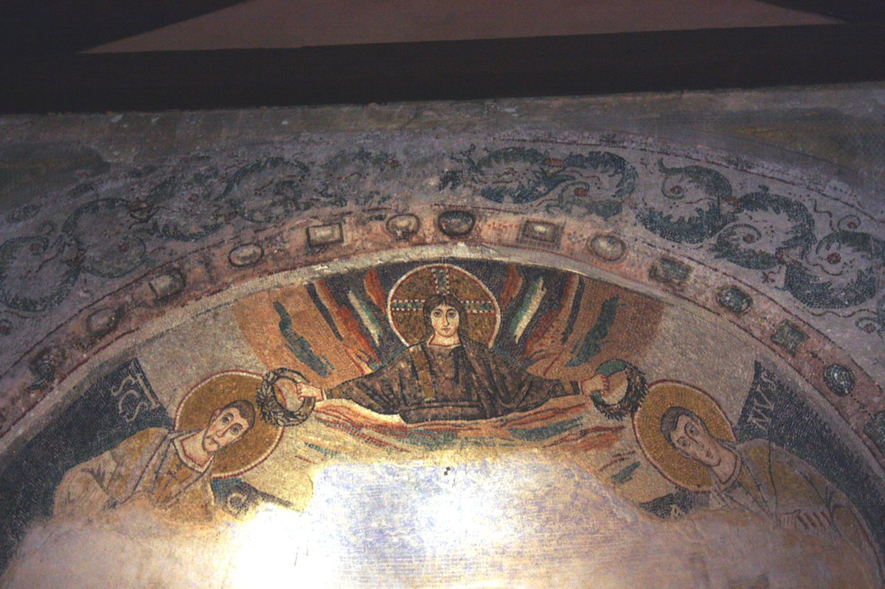
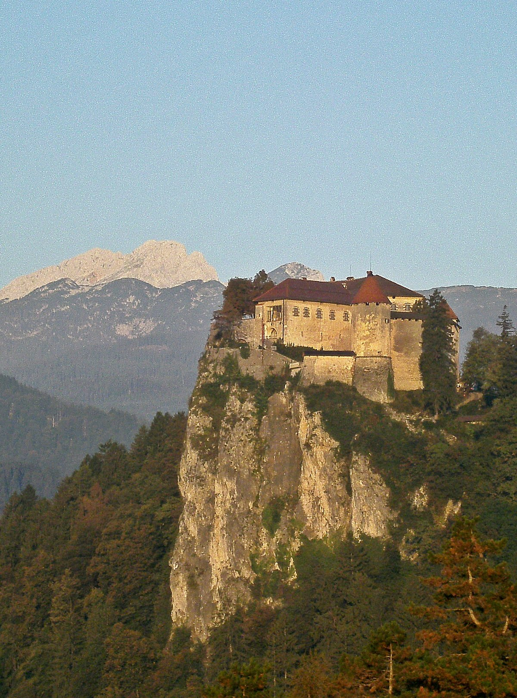
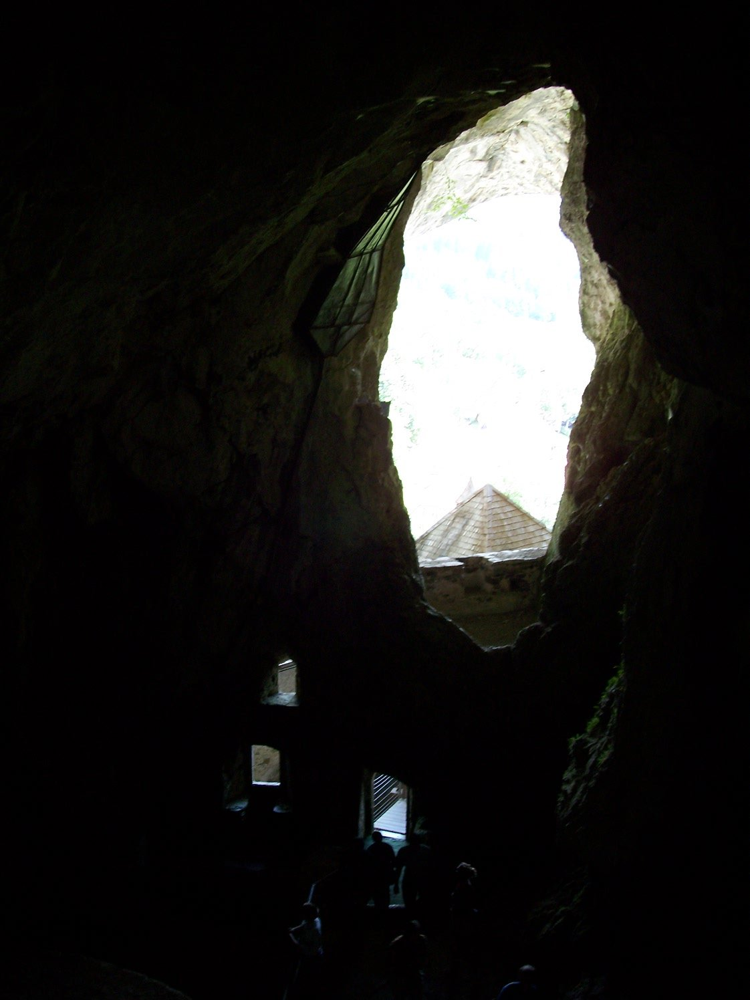
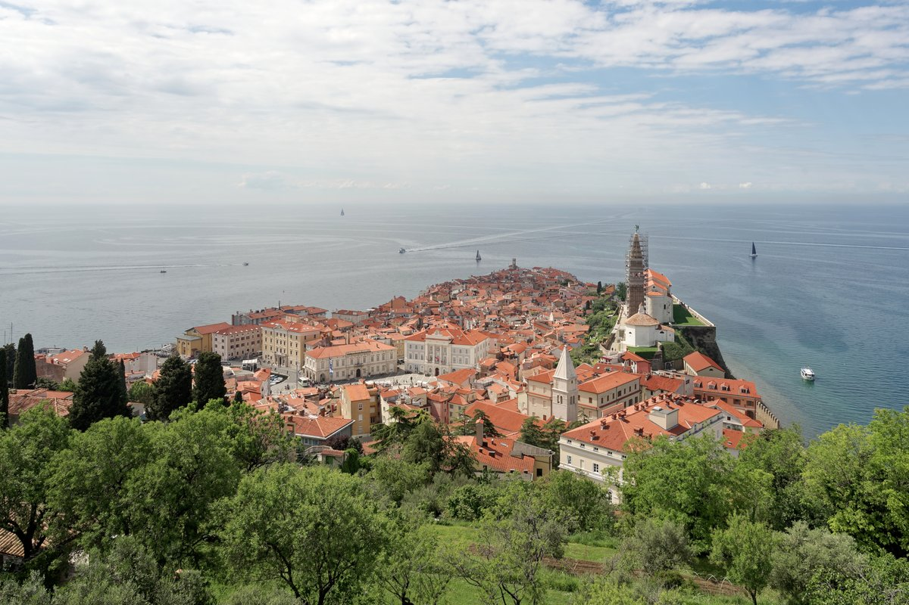

1995 年，考古學家在這座石灰岩洞穴裡挖出一根穿有規律孔洞的洞熊股骨——後來被稱為「迪夫耶貝貝骨笛」，是尼安德塔人留下的遺物，年代測定約五萬五千年前，比任何智人樂器都早了數萬年。它究竟是刻意鑽孔的樂器，還是掠食動物咬穿的骨頭，學界至今仍有爭論，但多數研究支持前者——如果屬實，這代表尼安德塔人早在智人之前，就已經擁有音階與音樂的概念。洞穴本身仍是活躍的考古發掘現場，鐵柵欄後仍持續進行研究工作。

羅馬帝國時代的「特爾格斯特（Tergeste）」在此建了一座可容納約六千觀眾的半圓形劇場，緊貼著聖朱斯托山腳、面向海灣——選址本身就是精心設計，觀眾席後方直接借景亞德里亞海。這座劇場長期被中世紀後蓋起的民房完全掩埋，直到 1938 年法西斯時期的都市更新計畫才重新出土，如今就靜靜躺在特里埃斯特舊城的市中心，走幾步路就能從熱鬧街道踏入兩千年前的看台。

阿奎萊亞建城於西元前 181 年，鼎盛時期是羅馬帝國第四大城，人口逼近十萬。主教堂地底鋪著的馬賽克地坪完成於西元四世紀初（313–320 年，主教特奧多雷任內），面積達 760 平方公尺，是西方世界現存最大片的早期基督教馬賽克地坪。畫面裡的「善牧」（Good Shepherd）——一位肩扛綿羊的牧人——是基督教藝術裡最早、最經典的圖像原型之一，走在教堂玻璃地板上往下看，等於直接踩在一千七百年前信徒留下的信仰宣言上。

由主教歐福拉西烏斯於六世紀中葉主持興建，後殿的金底馬賽克描繪聖母子與殉道聖徒，工藝細膩程度僅次於拉溫納與伊斯坦堡的拜占庭傑作——在羅馬帝國西部已然崩解、東羅馬（拜占庭）勢力短暫重返亞德里亞海岸的年代，這裡留下了那個轉瞬即逝時代最華麗的證據。整組建築群（主教座堂、洗禮堂、主教宮）保存完整度在地中海地區數一數二，1997 年列入 UNESCO 世界遺產。

1011 年，神聖羅馬帝國皇帝亨利二世將布萊德一帶的土地賞賜給布里克森主教，這是布萊德城堡首次出現在歷史文獻中——距今已超過一千年，是斯洛維尼亞現存最古老的城堡。城堡盤踞在垂直懸崖頂端，俯瞰整片布萊德湖與湖心小島，這個居高臨下的位置從中世紀起就同時是防禦要塞，也是眺望阿爾卑斯山雪峰最好的觀景台。

城堡最早文獻紀錄可追溯至 1274 年，現存的哥德－文藝復興混合式建築體則是 16 世紀重建的結果。整座城堡嵌進 123 公尺高的岩壁洞口，背後連通一整套天然洞穴系統——15 世紀城主埃拉澤姆正是靠這套洞穴通道，在被圍城將近一年的情況下，仍能源源不絕運補新鮮食物，把圍城軍隊耍得團團轉。走進城堡深處，會直接踏入這套仍在向山體延伸的天然岩洞。

皮蘭的聚落史可追溯至羅馬時代的「皮拉農（Pyrrhanum）」，但今日所見層層堆疊的威尼斯式建築與環繞舊城的防禦城牆，主要成形於 15 到 17 世紀威尼斯共和國統治時期。半島形的舊城三面環海，狹窄巷弄與鐘樓幾乎是縮小版的威尼斯本尊——站上城牆制高點回望，能一眼看盡整座古城如何被海洋與城牆同時圈住、同時保護了七百年。